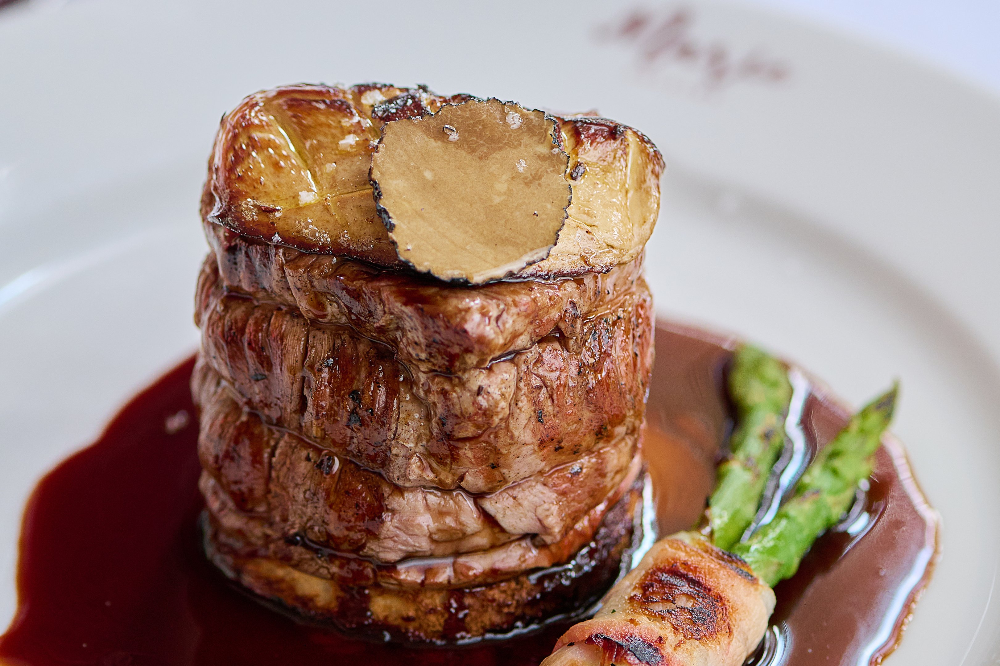
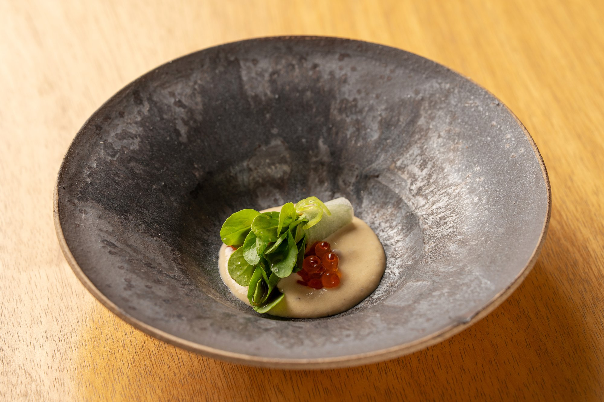
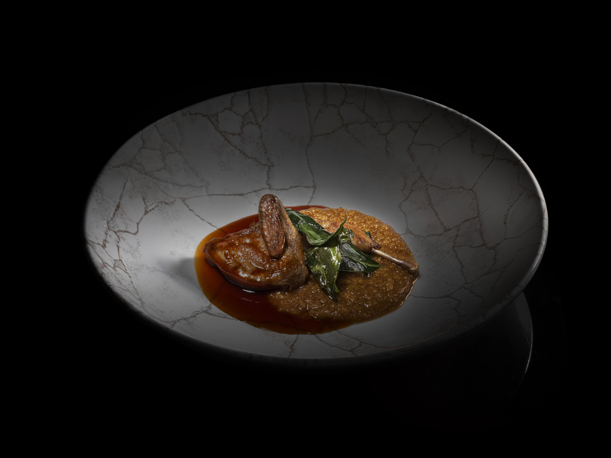
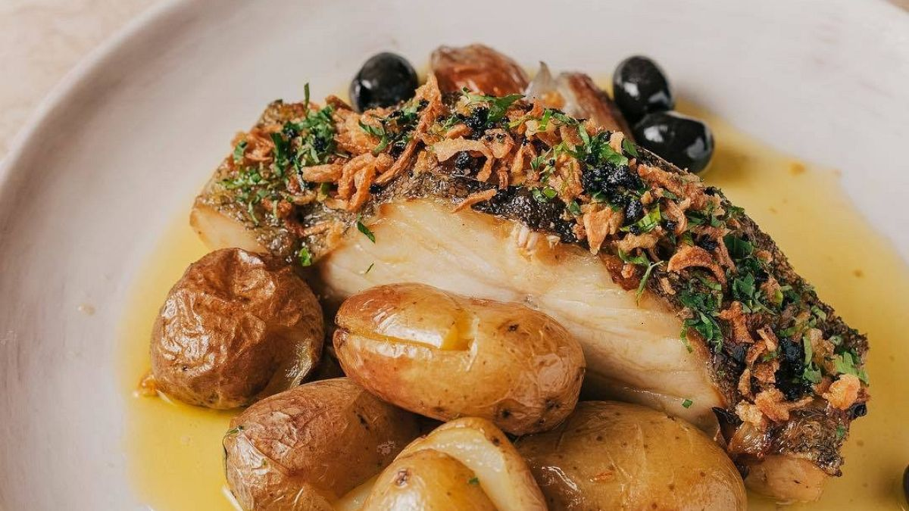
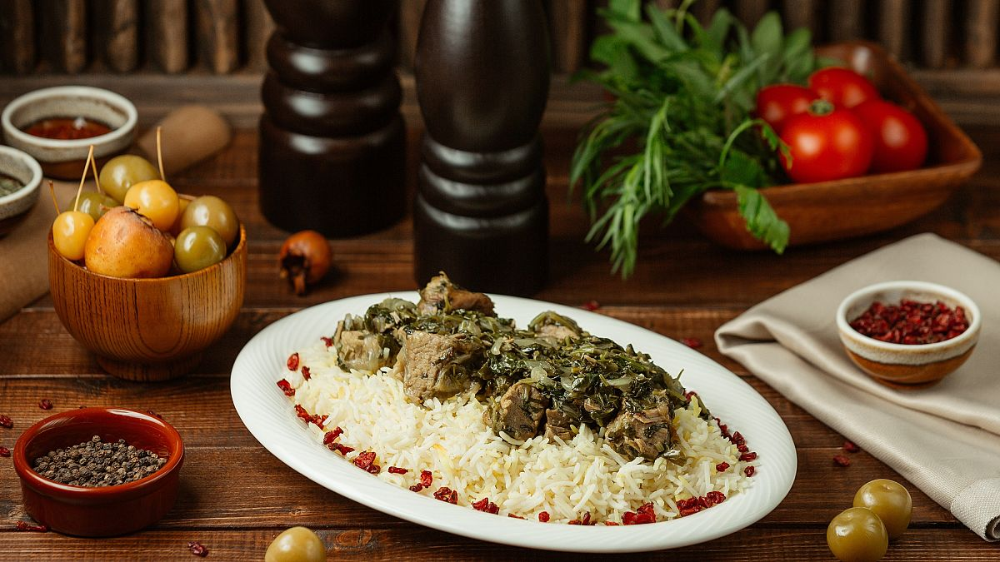
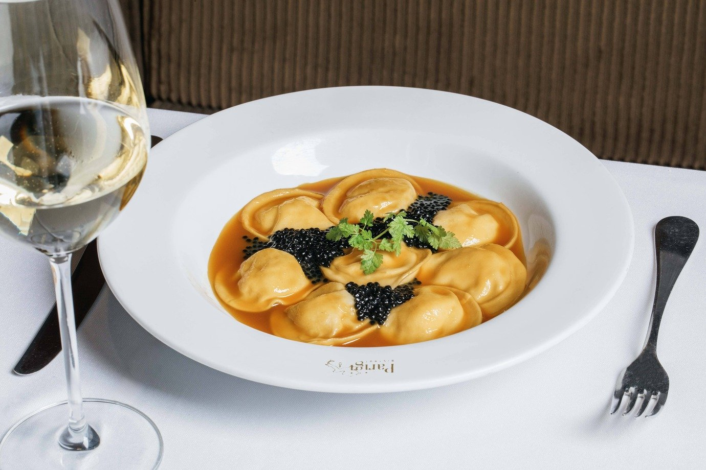
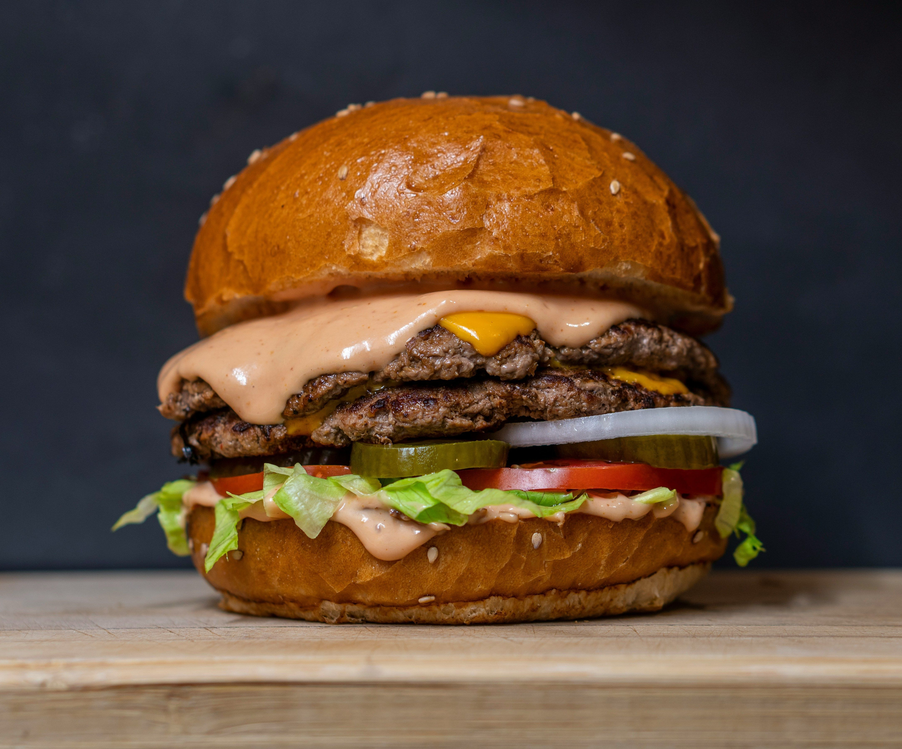
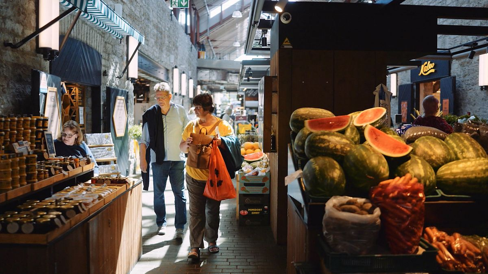

Os restaurantes foram eleitos por 65 jurados, entre os mais importantes jornalistas, críticos e influenciadores da cena culinária nacional

A lista dos 100 Melhores Restaurantes do Brasil foi elaborada com a ajuda de 65 jurados. Veja quanto custa comer nos 10 mais votados

SP e RJ têm 5 restaurantes com duas estrelas e 20 com uma estrela

Lisboa foi distinguida com o prémio de Melhor Destino Culinário da Europa nos World Culinary Awards. Há muito tempo que a capital tem vindo a ser reconhecida pela sua oferta gastronómica.

Sabores do Azerbaijão: passeios de Slow Food no norte do Azerbaijão
Fusão do antigo com o novo: tradição e modernidade na "Veneza do Oriente" chinesa
|  |
Dia dos Namorados 2025: 36 restaurantes em São Paulo para jantar a dois |
|---|
|  |
Pesquisas revelam dados de consumo, expansão do mercado e as principais tendências que moldam o futuro dos hambúrgueres no Brasil |
|---|
|  |
O que sabe sobre a comida estónia? Descubra as saborosas tradições do país báltico |
|---|